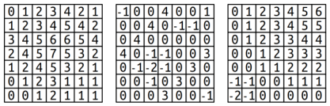
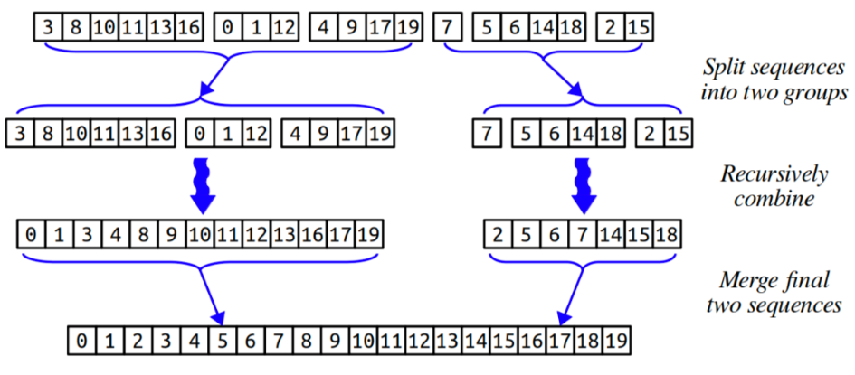
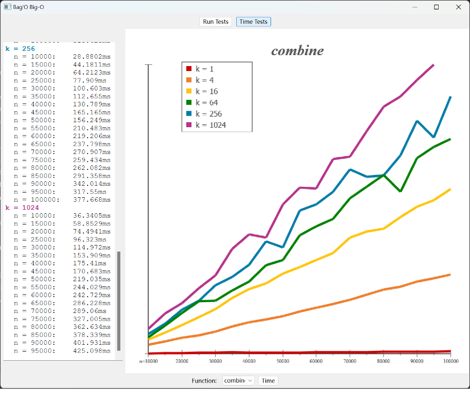
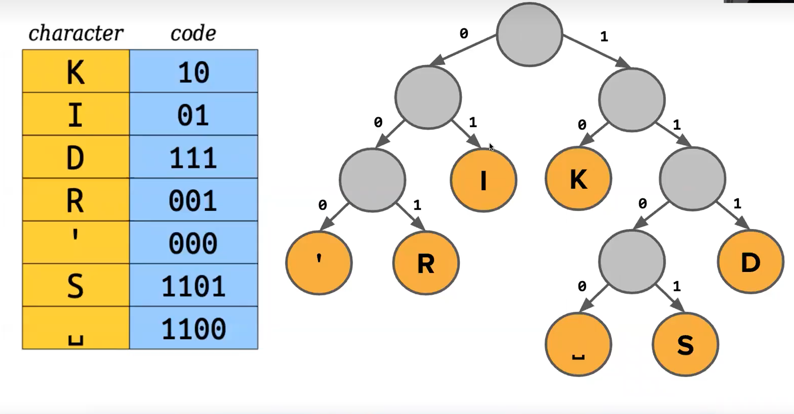
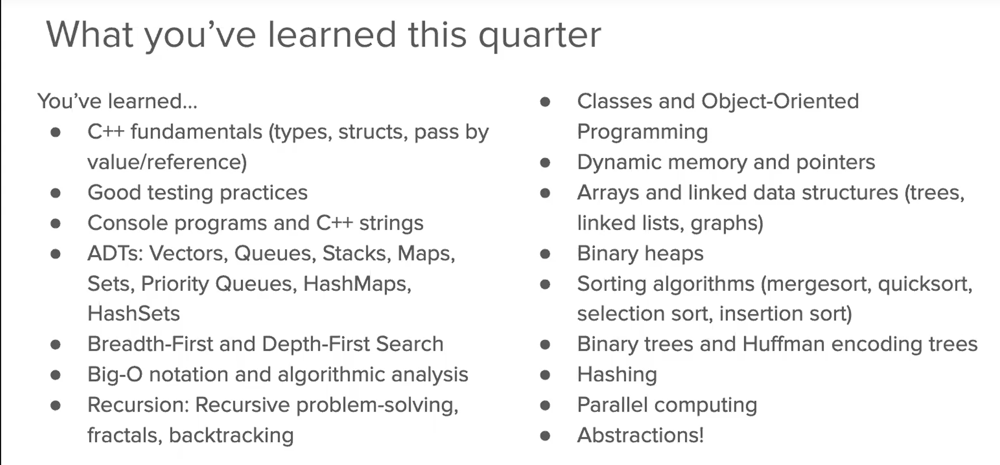

首先是 cs106b 的构成 cs106b 主要教的是 C++中的 abstractions(我也不知道啥意思),感觉是 ADT 和一些算法(主要是 recruitions) cs106b 里面有配套的 7 个 assignments 和 30 个 lecs,下面主要对他们进行记录 [TOC]
主要以体验 c++为主,里面有堆栈溢出的实践编程,可以感受 c++程序在 qt 里的编译,链接情况,和 debug 相关 让人联想起了 cmake,以后也许会学 关于 lecs,主要介绍一些 ADT 包括最基础的变量,list,array 到 strlib 库里的 vector,Set,Queue,Maps
这里就开始了使用 ADT 的训练,最终目的就是完成最终的 BFS 的编写,利用队列,各种 ADT,完成一个海水漫灌的模型,顺带的也介绍了一些基本知识如 BIG o 表示法和如何优化算法,评估算法优劣
PROBLEM:Your task in this part of the assignment is to build a tool that models flooding due to sea level rise. To do so, we’re going to model terrains as grids of doubles, where each double represents the altitude of a particular square region on Earth. Higher values indicate higher elevations, while lower values indicate lower elevations. For example, take a look at the three grids to the right. Before moving on, take a minute to think over the following questions, which you don’t need to submit. Which picture represents a small hill? Which one represents a long, sloping incline? Which one represents a lowland area surrounded by levees? 
Grid<bool> floodedRegionsIn(const Grid<double>& terrain,
const Vector<GridLocation>& sources,double height)
{
Grid<bool> AllMap(terrain.numRows(),terrain.numCols(),false);
Grid<bool> &AllMaps=AllMap;
Set<GridLocation> late;
if (sources.isEmpty())
{
return AllMaps;
}
Queue<GridLocation> AllMatters;
for (GridLocation i:sources)
{
if (terrain[i.row][i.col]<=height)
{
AllMaps[i.row][i.col]=true;
AllMatters.enqueue(i);
late.add(i);
}
}
//BFS
//ALlmatters一直变化,直到为空
while (!AllMatters.isEmpty())
{
//随便选一个
GridLocation cur=AllMatters.dequeue();
//走两步
for (int i=cur.col-1;i<=cur.col+1;i+=2)
{
//操作
if (i<0||i>=terrain.numCols())
{
continue;
}
//符合条件,压栈
if (terrain[cur.row][i]<=height)
{
AllMaps[cur.row][i]=true;
GridLocation j={cur.row,i};
if (!late.contains(j))
{
late.add(j);
AllMatters.enqueue(j);
}
}
}
for (int i=cur.row-1;i<=cur.row+1;i+=2)
{
if (i<0||i>=terrain.numRows())
{
continue;
}
if (terrain[i][cur.col]<=height)
{
AllMaps[i][cur.col]=true;
GridLocation j={i,cur.col};
if (!late.contains(j))
{
late.add(j);
AllMatters.enqueue(j);
}
}
}
}
return AllMaps;
}
这里就开始了递归的训练,先讲基本的递归思想,例子,然后 assignment 要求实现 DFS 的一系列递归问题(难) 在编写递归算法的基础上还要求掌握优化方法(记忆),便面不必须的开支 这里就需要做一个总结了,DFS 和 BFS 的大总结 对于 DFS 来说 框架为
void dfs() //参数用来表示状态
{
if(到达终点状态)
{
...//根据题意添加
return;
}
if(越界或者是不合法状态)
return;
if(特殊状态)//剪枝
return ;
for(扩展方式)
{
if(扩展方式所达到状态合法)
{
修改操作;//根据题意来添加
标记；
dfs（）；
(还原标记)；
//是否还原标记根据题意
//如果加上（还原标记）就是 回溯法
}
}
}
Recurisive all matters 1.抓住基本盘
if (a == number)
{
do the basic case;
return {basic};
}
if (b < c)
{
return somecases;
}
/* decisions */
/* decison 1 under A condition */
do the fuck ;
/* decison 2 under A condition */
do the fuck ;
...
/* decision n */
do the fuck ;
/* UNDO */
undo the fuck ;
return what we want;
matter A:有序组合
Set<string> allEmphasesOfHelper(Vector<string> decisionmade, Vector<string> decisiontomake){
Set<string> emphasis;
if (decisiontomake.isEmpty())
return emphasis;
else
{
Vector<string> tokencopy = decisiontomake;
//这个copy的位置决定了每一此函数调用内tokencopy只取决于给函数的decisiontomake
for(int i = 0; i < tokencopy.size(); i++){
if(isalpha(decisiontomake[0][0])){
// include lowercase-version of this word
decisiontomake.remove(0);
decisionmade += toLowerCase(tokencopy[i]);
if(decisiontomake.isEmpty())
emphasis.add(Vec2Str(decisionmade) + Vec2Str(decisiontomake));
emphasis += allEmphasesOfHelper(decisionmade, decisiontomake);
// include uppercase-version of this word
decisionmade.remove(decisionmade.size() - 1);
decisionmade += toUpperCase(tokencopy[i]);
if(decisiontomake.isEmpty()){
emphasis.add(Vec2Str(decisionmade) + Vec2Str(decisiontomake));
}
emphasis += allEmphasesOfHelper(decisionmade, decisiontomake);
}
else{
decisiontomake.remove(0);
decisionmade += tokencopy[i];
if(decisiontomake.isEmpty())
emphasis.add(Vec2Str(decisionmade) + Vec2Str(decisiontomake));}
}
}
return emphasis;
}
Set<Shift> highestValueScheduleFor(const Set<Shift>& shifts, int maxHours) {
Set<Shift> shiftmade = {};
Set<Shift> shifttomake = shifts;
int shiftHours = 0 ;
cout << shifttomake <<endl <<"-----------------------------------------"<<endl ;
return highestValueScheduleForhelper(shiftmade,shifttomake,shiftHours,maxHours);
}
int checkShift (const Shift &Cur,const Set<Shift>& shiftmade)
{
for (Shift s : shiftmade)
{
if (overlapsWith(s,Cur))
{
return 1;
}
}
return 0;
}
int cal (const Set<Shift> &shiftmade)
{
int cal = 0;
for (const Shift &s : shiftmade)
{
cal += valueOf(s);
}
return cal;
}
Set<Shift> highestValueScheduleForhelper( Set<Shift>& shiftmade,
Set<Shift>& shifttomake,
int &shiftHours,
int &maxHours){
if (maxHours < 0)
{
error("fuck");
}
if (maxHours == 0)
{
return {};
}
//basic cases
if (shifttomake.isEmpty())
{
return shiftmade;
}
Set<Shift> UndosetTomake = {};
Set<Shift> UndosetMade = {};
int UndoHours = 0;
Shift Cur = shifttomake.first();
shifttomake = shifttomake - Cur;
UndosetTomake = UndosetTomake + Cur ;
//判断Cur是否是考虑对象
if (lengthOf(Cur) <= 0){
error("fuck");
}
if (checkShift(Cur,shiftmade)||shiftHours + lengthOf(Cur)>maxHours)
{
Set<Shift> without = highestValueScheduleForhelper(shiftmade,shifttomake,shiftHours,maxHours);
shifttomake = shifttomake + UndosetTomake ;
return without;
}
//Undo 的适合也许得恢复所有的改变.把所有抛弃的Cur放在一个集合里(?
//exclude
Set<Shift> MaxValueWithout =highestValueScheduleForhelper(shiftmade,
shifttomake,
shiftHours,
maxHours);
//include
shiftmade = shiftmade + Cur ;
shiftHours = shiftHours + lengthOf(Cur);
//Undo
UndoHours = UndoHours + lengthOf(Cur);
UndosetMade = UndosetMade + Cur ;
Set<Shift> MaxValueWith = highestValueScheduleForhelper(shiftmade,
shifttomake,
shiftHours,
maxHours);
//Undo
shiftmade = shiftmade - UndosetMade;
shifttomake = shifttomake + UndosetTomake ;
shiftHours = shiftHours - UndoHours;
//end
if (cal(MaxValueWith) >= cal(MaxValueWithout))
{
return MaxValueWith;
}
else {
return MaxValueWithout;
}
}
matter C:寻找完美匹配
bool hasPerfectMatching(const Map<string, Set<string>> &possibleLinks, Set<Pair>& matching) {
if (possibleLinks.isEmpty())
{
return true;
}
if (possibleLinks.size()%2 == 1)
{
return false;
}
string Cur = possibleLinks.firstKey();
if (possibleLinks.get(Cur).isEmpty())
{
return false ;
}
for (string CurLink:possibleLinks.get(Cur))
{
Map<string, Set<string>> possibleLinksc = possibleLinks;
/*关键变量在这里,这个case不需要回溯,就是因为这个函数本质上只包括一个循环,每个循环的参数都不是同一个参数,所以完全不需要回溯,只在一个循环内进行修改*/
Pair chosen(Cur,CurLink);
matching = matching + chosen;
Set<string> Curs = possibleLinksc.get(Cur);
Set<string> CurLinks = possibleLinksc.get(CurLink);
possibleLinksc.remove(Cur);
possibleLinksc.remove(CurLink);
//图里面的crud
for (string Curt:possibleLinksc.keys())
{
if (possibleLinksc.get(Curt).contains(CurLink))
{
possibleLinksc.put(Curt,possibleLinksc.get(Curt)-CurLink);
}
if (possibleLinksc.get(Curt).contains(Cur))
{
possibleLinksc.put(Curt,possibleLinksc.get(Curt)-Cur);
}
}
if (hasPerfectMatching(possibleLinksc,matching))
{
return true;
}
else{
matching = matching - chosen;
}
}
return false;
}
matter D: maximumMtching
Set<Pair> maximumWeightMatchingRec(const Map<string, Map<string, int>> links, Set<Pair> team) {
//baseline
if (links.isEmpty()) {
return team;
}
//create a answer with value
Map<Set<Pair>, int> possiblePairs = {};
//select Current
string person = links.firstKey();
//consider all maps for Cur
for (const string & partner : links[person]) {
//pruning :minus value not considered
if (links[person][partner] < 0) {
continue;
}
//consider this case(choosen one)
Pair pair = {person, partner};
//copy version for graph
auto backup = links;
//change for choose
backup.remove(person);
backup.remove(partner);
for (const string & classmate : backup) {
if (backup[classmate].containsKey(person)) {
backup[classmate].remove(person);
}
if (backup[classmate].containsKey(partner)) {
backup[classmate].remove(partner);
}
}
Set<Pair> program = maximumWeightMatchingRec(backup, team + pair) + team;
possiblePairs[program] = cal(links, program);
}
//new copy, the same as choose case
auto backup = links;
backup.remove(person);
//not choose case
//change for not choose
for (const string & classmate : backup) {
if (backup[classmate].containsKey(person)) {
backup[classmate].remove(person);
}
}
//unchoose case
Set<Pair> program = maximumWeightMatchingRec(backup, team);
possiblePairs[program] = cal(links, program);
team = possiblePairs.firstKey();
//choose the highest case
for (Set<Pair> combination : possiblePairs) {
if (possiblePairs[combination] > possiblePairs[team]) {
team = combination;
}
}
return team;
}
试修改版本
Set<Pair> maximumWeightMatchingRec(const Map<string, Map<string, int>>& links, Set<Pair>& team) {
//baseline
if (links.isEmpty()) {
return team;
}
//select Current
string person = links.firstKey();
//consider all maps for Cur
for (const string & partner : links[person]) {
//pruning :minus value not considered
if (links[person][partner] < 0) {
continue;
}
//consider this case(choosen one)
Pair pair = {person, partner};
//change for choose
//copy version
Map<string, Map<string, int>> backup = links;
backup.remove(person);
backup.remove(partner);
for (const string & classmate : backup) {
if (backup[classmate].containsKey(person)) {
backup[classmate].remove(person);
}
if (backup[classmate].containsKey(partner)) {
backup[classmate].remove(partner);
}
}
//method for choose max:change meta data
Set<Pair> program = maximumWeightMatchingRec(backup, team + pair);
int weight = cal(links, program);
if (weight > cal(links, team)) {
team = program;
}
}
//not choose case
Map<string, Map<string, int>> backup = links;
backup.remove(person);
for (const string & classmate : backup) {
if (backup[classmate].containsKey(person)) {
backup[classmate].remove(person);
}
}
//unchoose case
Set<Pair> program = maximumWeightMatchingRec(backup, team);
int weight = cal(links, program);
if (weight > cal(links, team)) {
team = program;
}
return team;
}
//choose the set for the heighst value
helper(Set& A,Graph B){
do one choose
for (case:cases){
pruning ;
choose ;
change A ;
int value = cal(A) ;
if (cal(current)>value){
A = current
}
}
unchoose
int value = cal(A) ;
if (cal(current) > value){
A = current
}
return A ;
}
bool canBeMadeDisasterReady(const Map<string, Set<string>>& roadNetwork,
int numCities,
Set<string>& supplyLocations) {
//baseline
if (numCities<0){
error("s");
}
if (supplyLocations.size()>numCities){
return false ;
}
if(supplyLocations.size() <= numCities && roadNetwork.isEmpty()){
return true ;
}
string city = roadNetwork.firstKey();
Set<string> Cur = roadNetwork[city];
Cur.add(city);
Map<string, Set<string>> copygraph = roadNetwork;
for (string cover:Cur){
Map<string, Set<string>> copy = roadNetwork;
supplyLocations.add(cover);
if (supplyLocations.size()>numCities){
supplyLocations.remove(cover);
continue ;
}
for (string coverd:copygraph[cover]){
copy.remove(coverd);
}
copy.remove(cover);
if (canBeMadeDisasterReady(copy,numCities,supplyLocations)){
}else{
supplyLocations.remove(cover) ;
continue ;
}
}
return false ;
}
wrong :stack overflow,more precise,change procedure is wrong reason :repeat covering by one specific city :wq correct answer
//helper function must be there
//separate args and calls
bool canBeMadeDisasterReady(const Map<string, Set<string>>& roadNetwork,
int numCities,
Set<string>& supplyLocation){
//call error
if (numCities < 0) {
error("num of supplied city less than 0");
}
Set<string> remaining;
for (string city : roadNetwork) {
remaining += city;
}
//remaining contains all citys
return helper(roadNetwork, numCities, supplyLocations, remaining);
}
//helper function
//4 args
bool helper(const Map<string, Set<string>> & roadNetwork,
int numCitys,
Set<string>& supplyLocations,
Set<string>& remaining) {
if (numCitys < 0) {
return false;
}
if (remaining.isEmpty() && numCitys >= 0) {
return true;
}
//there are only two cases
// case 1:
// choose one of the remaining to supplyLocations
string choose = remaining.first();
Set<string> neighbors = roadNetwork[choose];
Set<string> left = remaining - choose - neighbors;
supplyLocations += choose; // choose
if (helper(roadNetwork, numCitys - 1, supplyLocations, left)) { // explore
return true;
}
//back
supplyLocations -= choose; // unchoose
// case 2: choose one of the remaining's neighbor to supplyLocations
for (string neighbor : neighbors) {
//neighbor will be covered
//neighborsOfneighbor is citys coverd by neighbor
Set<string> neighborsOfNeighbor = roadNetwork[neighbor];
//left is a set about citys uncoverd
Set<string> left = remaining - neighborsOfNeighbor - neighbor;
supplyLocations += neighbor;
//inplement by decreasing numCitys
if (helper(roadNetwork, numCitys - 1, supplyLocations, left)) {
return true;
}
//back
supplyLocations -= ne ighbor;
}
return false;
}
try correct version
//TODO:fix
bool canBeMadeDisasterReady(const Map<string, Set<string>>& roadNetwork,
int numCities,
Set<string>& supplyLocations) {
//baseline
if (numCities < 0){
error("s");
}
if (supplyLocations.size() > numCities ){
return false ;
}
if(supplyLocations.size() <= numCities && roadNetwork.isEmpty()){
return true ;
}
//choose current
string city = roadNetwork.firstKey();
Set<string> Cur = roadNetwork[city];
Cur.add(city);
for (string cover:Cur){
if (supplyLocations.contains(cover)){
continue ;
}
//copy
Map<string, Set<string>> copy = roadNetwork;
supplyLocations.add(cover);
//pruning
if (supplyLocations.size() > numCities){
supplyLocations.remove(cover);
continue ;
}
//change
for (string coverd:roadNetwork[cover]+cover){
for (string curt:copy.keys()){
if (copy[curt].contains(coverd)){
copy[curt].remove(coverd);
}
}
copy.remove(coverd);
}
copy.remove(cover);
//recursion
if (canBeMadeDisasterReady(copy,numCities,supplyLocations)){
return true ;
}else{
supplyLocations.remove(cover) ;
continue ;
}
}
return false ;
}

Vector<DataPoint> combineTwo(Vector<DataPoint>A,Vector<DataPoint>B){
Vector<DataPoint> C = {} ;
int num1 = A.size();
int num2 = B.size();
if (num1 == 0 && num2 == 0){
return C;
}
if (num1 == 0){
C = B ;
return C ;
}
if (num2 == 0){
C = A ;
return C ;
}
for (int i = 0;i < num1 + num2;i++){
if (A.isEmpty()){
C.add(B.get(0)) ;
B.remove(0);
continue ;
}
if (B.isEmpty()){
C.add(A.get(0)) ;
A.remove(0);
continue ;
}
if (A.get(0).weight <= B.get(0).weight){
C.add(A.get(0));
A.remove(0);
continue ;
}else {
C.add(B.get(0));
B.remove(0) ;
continue;
}
}
return C ;
}
Vector<DataPoint> combine(const Vector<Vector<DataPoint>>& sequences) {
//spilt copy
Vector<DataPoint> C = {};
int num = sequences.size() ;
if (num == 1){
return sequences.get(0);
}
if(num == 0){
return C ;
}
if (num % 2 == 0){
Vector<Vector<DataPoint>> spilt1 = sequences.subList(0,num/2);
Vector<Vector<DataPoint>> spilt2 = sequences.subList(num/2,num/2);
Vector<DataPoint> ans1 = combine(spilt1);
Vector<DataPoint> ans2 = combine(spilt2);
Vector<DataPoint> ans = combineTwo(ans1,ans2);
return ans;
}
if (num % 2 == 1){
Vector<Vector<DataPoint>> spilt1 = sequences.subList(0,(num-1)/2);
Vector<Vector<DataPoint>> spilt2 = sequences.subList((num-1)/2,(num-1)/2);
Vector<DataPoint> ans1 = combine(spilt1);
Vector<DataPoint> ans2 = combine(spilt2);
Vector<DataPoint> ans3 = combineTwo(ans1,ans2);
Vector<DataPoint> ans4 = sequences.get(num - 1) ;
Vector<DataPoint> ans = combineTwo(ans3,ans4);
return ans ;
}
return C ;
}
improvements: from tail to head
Vector<DataPoint> combineTwo(Vector<DataPoint>A,Vector<DataPoint>B){
Vector<DataPoint> C = {} ;
int num1 = A.size();
int num2 = B.size();
if (num1 == 0 && num2 == 0){
return C;
}
if (num1 == 0){
C = B ;
return C ;
}
if (num2 == 0){
C = A ;
return C ;
}
for (int i = 0;i < num1 + num2;i++){
int numA = A.size() - 1;
int numB = B.size() - 1;
if (A.isEmpty()){
C.add(B.get(numB));
B.remove(numB );
continue;
}
if (B.isEmpty()){
C.add(A.get(numA));
A.remove(numA);
continue ;
}
if (A.get(numA).weight >= B.get(numB).weight){
C.add(A.get(numA));
A.remove(numA);
continue ;
}else {
C.add(B.get(numB));
B.remove(numB);
continue;
}
}
Vector<DataPoint> D = {};
while (C.size()>0){
D.add(C.get(C.size()-1));
C.remove(C.size() - 1);
}
return D ;
}
algorithm graph

O(nlogk)
类 class 三步走 1.成员变量 2.成员函数 3.构造器
exploreArrays
void exploreArrays() {
/* In this section, you'll see how to use the debugger to read the contents
* of arrays in memory and how to recognize when you're trying to read past
* the end of an array.
*
* Begin by setting a breakpoint on the line of code shown below, then doing
* execute the "Step Over" command until you're at the next comment.
*/
DataPoint* elems = new DataPoint[4] {
{ "What", 1 },
{ "a", 2 },
{ "wonderful", 3 },
{ "world!", 4 },
};
/* At this point, you now have a nice array of elements in memory. If you
* try using the debugger to read that array, though, you'll probably only
* see the first element of that array.
*
* To fix this, we'll need to tell the debugger to change the display
* format for elems. To do so, right-click on "elems" in the debugging
* window that shows local variable values. You should see two groups of
* options in the menu. One group be marked "Change Display for Object
* Named local.elems," and the other will be marked "Change Display for
* Type DataPoint*." In the group for "Object Named local.elems," choose
* the option "Array of 10 items." When you do, you should see ten drop-
* down slots appear underneath elems.
*
* Expand out slots [0], [1], [2], and [3] and confirm that you can read
* the values there and that they match what was created in the array
* above. You should see the data and weight fields. (You'll also see
* one called _initializationFlag. This is something extra we added for
* this assignment to make it easier to spot memory errors, and you can
* safely ignore it.)
*
* Once you've done that, hit "Step Over" to skip this line of code.
*/
elems[0].weight++; // Just a place for the debugger to rest.
/* Now, expand out slots [4], [5], [6], ..., and [9]. These slots aren't
* actually a part of the array, and they're essentially garbage values
* that appear past the end of the array we allocated up above. Some of
* the strings you'll see might be marked <not accessible>, while others
* might be empty, or might be random sequences of symbols. The numbers
* that you see on the different slots are similarly unpredictable - they
* might happen to be all zeros, or they might be completely random values
* with no discernable pattern.
*
* Hit "Step Over" to skip this next line and move on to the next section.
*/
elems[0].weight++; // Just a place for the debugger to rest.
/* This next section of code allocates space for three DataPoints, but
* doesn't initialize them. Hit "Step Over" to set that array up.
*
* (Yes, we just leaked a bunch of memory. That's not a good thing, but
* this is purely for educational purposes and so we don't care. ^_^)
*/
elems = new DataPoint[3];
/* Now, poke around a bit in the debugger and look at the array contents.
* Look at slots [0], [1], and [2] (the valid slots in the array.)
* We didn't initialize any of the elements in this array, so C++ does
* what it normally does when initializing those elements. In particular,
* notice that
*
* 1. the strings have all been set to the empty string, and
* 2. the integers are all essentially random.
*
* Now, move on and look at slots [3], [4], ..., [9]. Notice that the
* integers here all look pretty much random as well, but the strings here
* are likely to be a mix of empty, <not accessible>, and totally random.
*
* We wanted you to see this because we want you to understand that seeing
* garbage values in memory doesn't necessarily mean that you've walked off
* the end of the array. Rather, it likely means that you're seeing some
* values in memory that weren't initialized. So don't panic if you see
* this when writing code that uses arrays - it doesn't mean that your
* pointer is "bad" or something like that. It could very well mean that
* you have the space you need, but just forgot to initialize the values
* there.
*/
elems[0].weight = 137; // Ah, give a nice value.
/* To wrap up this section, edit res/ShortAnswers.txt with your answers
* to the following questions:
*
* Q1: What operating system are you using? (Windows, macOS, Linux, etc.)
*
* Q2: What are the values you see in elems[3], elems[4], and elems[5]? If
* you see garbage strings that run for long periods of time, just give
* us the first few characters, or your best approximation of them. :-)
*
*/
elems[1].weight = 137; // Just another place for the debugger to chill.
}
内存泄漏
priority queues
class HeapPQueue {
public:
/**
* Creates a new, empty priority queue.
*/
HeapPQueue();
/**
* Cleans up all memory allocated by this priorty queue. Remember, you're responsible
* for managing your own memory!
*/
~HeapPQueue();
/**
* Adds a new data point into the queue. This operation runs in time O(log n),
* where n is the number of elements in the queue.
*
* @param data The data point to add.
*/
void enqueue(const DataPoint& data);
/**
* Removes and returns the lowest-weight data point in the priority queue. If multiple
* elements are tied for having the loweset weight, any one of them may be returned.
*
* If the priority queue is empty, this function calls error() to report an error.
*
* This operation must run in time O(log n), where n is the number of elements in the
* queue.
*
* @return The lowest-weight data point in the queue.
*/
DataPoint dequeue();
/**
* Returns, but does not remove, the element that would next be removed via a call to
* dequeue.
*
* If the priority queue is empty, this function calls error() to report an error.
*
* This operation must run in time O(1).
*
* @return
*/
DataPoint peek() const;
/**
* Returns whether the priority queue is empty.
*
* This operation must run in time O(1).
*
* @return Whether the priority queue is empty.
*/
bool isEmpty() const;
/**
* Returns the number of data points in this priority queue.
*
* This operation must run in time O(1).
*
* @return The number of elements in the priority queue.
*/
int size() const;
/* This function exists purely for testing purposes. You can have it do whatever you'd
* like and we won't be invoking it when grading. In the past, students have had this
* function print out the array representing the heap, or information about how much
* space is allocated, etc. Feel free to use it as you see fit!
*/
void printDebugInfo();
private:
/* Pointer to the array of elements. Our tests expect your implementation to use the
* name 'elems' for the pointer to the array of elements, so please do not rename this
* variable.
*/
DataPoint* elems = nullptr;
/* Logical size of the priority queue (the number of elements stored in the heap).
* Our tests expect that this variable exists, so please do not rename this variable.
*/
int logicalSize = 0;
/* Allocated size of the priority queue (the number of slots used in the heap).
* Our tests expect that this variable exists, so please do not rename this variable.
*/
int allocatedSize = 0;
/* Constant controlling how big the original array should be.
*
* We've picked this value because it's large enough to hold
* a small number of elements for when you're just getting
* started, but small enough that it's easy to test resizing
* behavior. You shouldn't edit this value.
*/
static const int INITIAL_SIZE = 6;
/* TODo: Add any private member variables, member functions, or member
* types that you'd like. You're welcome to implement this type however
* you'd like, provided that you do all your own memory management, you
* don't use any container types (e.g. Vector, HashSet, etc.), and that
* your implementation uses a binary heap.
*
* TODO: Delete this comment before submitting.
*/
int son1(int index) ;
int son2(int index);
int father(int index);
void expend ();
/* By default, C++ will let you copy objects. The problem is that the default copy
* just does an element-by-element copy, which with pointers will give invalid results.
* This macro disables copying of this type. For more details about how this works, and
* for more information about how to override the default behavior, take CS106L!
*/
DISALLOW_COPYING_OF(HeapPQueue);
/* Grants STUDENT_TEST and PROVIDED_TEST access to the private section of this class.
* This allows tests to check private fields to make sure they have the right values
* and to test specific helper functions.
*/
ALLOW_TEST_ACCESS();
};
#include "HeapPQueue.h"
using namespace std;
HeapPQueue::HeapPQueue() {
elems = new DataPoint[INITIAL_SIZE] ;
allocatedSize = INITIAL_SIZE ;
logicalSize = 0 ;
if (elems != nullptr){
for (int i=1;i<sizeof(elems);i++){
elems[i].weight = 0 ;
}
}
}
HeapPQueue::~HeapPQueue() {
/* TODo: Implement this. */
delete []elems ;
}
int HeapPQueue::size() const {
return logicalSize ;
}
bool HeapPQueue::isEmpty() const {
if (logicalSize == 0){
return true ;
}
else {
return false ;
}
}
void HeapPQueue::enqueue(const DataPoint& data) {
/* TODo: Delete the next line and implement this. */
if (logicalSize == allocatedSize - 1){
HeapPQueue::expend();
}
logicalSize++ ;
elems[logicalSize] = data ;
int i = logicalSize ;
while (father(i) > 0) {
if (elems[i].weight < elems[father(i)].weight){
swap(elems[i],elems[father(i)]) ;
i = father(i);
}
else {
return ;
}
}
return ;
}
DataPoint HeapPQueue::peek() const {
if (elems == nullptr){
return {};
}
if (logicalSize == 0){
error("s");
}
/* TODo: Delete the next line and implement this. */
return elems[1] ;
}
DataPoint HeapPQueue::dequeue() {
if (logicalSize == 0){
error("s");
}
/* TODo: Delete the next line and implement this. */
if (elems == nullptr){
return {};
}
DataPoint ans = elems[1];
elems[1] = elems[logicalSize] ;
logicalSize-- ;
int son = 0;
for(int i = 1;;i = son ){
if (son1(i) > logicalSize){
if (son2(i)>logicalSize){
break ;
}
else {
son = son2(i);
}
}
else {
if (son2(i)>logicalSize){
son = son1(i);
}
else {
if (elems[son1(i)].weight < elems[son2(i)].weight){
son = son1(i);
}else {
son = son2(i);
}
}
}
//swap
if (elems[i].weight > elems[son].weight){
swap(elems[i],elems[son]) ;
}
else {
return ans;
}
}
return ans;
}
int HeapPQueue::son1(int index) {
int son1 = 2*index;
return son1 ;
}
int HeapPQueue::son2(int index){
int son2 = 2*index + 1 ;
return son2 ;
}
int HeapPQueue::father(int index)
{
if (index % 2 == 0){
return index / 2 ;
}
if (index % 2 == 1){
return (index - 1)/2 ;
}
return 0 ;
}
void HeapPQueue::expend (){
DataPoint * newelems = nullptr ;
newelems = new DataPoint[2 * allocatedSize];
if (newelems!=nullptr){
for (int i=1;i<logicalSize + 1;i++){
newelems[i] = elems[i];
}
}
delete []elems ;
elems = newelems ;
allocatedSize = allocatedSize * 2;
}
the use for heapPQueue:Apportionment
try to make it O(nlogk)
Map<string, int> apportion(const Map<string, int>& populations, int numSeats) {
/* TOD: Delete this line and the lines below it, then implement this function. */
if (populations.size()>numSeats){
error("s") ;
}
HeapPQueue condition ;
HeapPQueue conditioncopy ;
Map<string, int> ans = {};
//初始化
for (string key:populations){
ans.put(key,1);
}
for (string key:populations){
if (ans[key] == 1){
DataPoint ans1 = {key,populations[key]/sqrt(2)} ;
condition.enqueue(ans1) ;
}
}
//分配席位
for (int num = 0 ; num < numSeats - populations.size() ; num++){
//分配席位,欺骗状态优先级队列
DataPoint statet ;
while (!condition.isEmpty()){
statet = condition.dequeue();
conditioncopy.enqueue(statet) ;
}
//最高权重name
string stateName = statet.name ;
//最高权重新席位数
int newnum = ans[stateName] + 1 ;
ans.put(stateName,newnum) ;
//最高权重人口
int pop = populations[stateName] ;
//计算最高权重的新值
DataPoint newdata = {stateName,pop/sqrt(newnum*(newnum + 1))} ;
condition.enqueue(newdata) ;
//从copy中取,重新注入condition
DataPoint statetcopy ;
while (!conditioncopy.isEmpty()){
statetcopy = conditioncopy.dequeue() ;
if (statetcopy!=statet){
condition.enqueue(statetcopy) ;
}
}
}
return ans ;
}
超时,重写,很简单,我们打入倒数(所以cs中返回最的函数必然既能最大值也能返回最小值,只需颠倒)
Map<string, int> apportion(const Map<string, int>& populations, int numSeats) {
if (populations.size()>numSeats){
error("s") ;
}
HeapPQueue condition ;
Map<string, int> ans = {};
//初始化
for (string key:populations){
ans.put(key,1);
}
for (string key:populations){
if (ans[key] == 1){
DataPoint ans1 = {key,sqrt(2)/populations[key]} ;
condition.enqueue(ans1) ;
}
}
//分配席位
for (int num = 0 ; num < numSeats - populations.size() ; num++){
//分配席位,欺骗状态优先级队列
DataPoint statet ;
statet = condition.dequeue();
//最高权重name
string stateName = statet.name ;
//最高权重新席位数
int newnum = ans[stateName] + 1 ;
ans.put(stateName,newnum) ;
//最高权重人口
int pop = populations[stateName] ;
//计算最高权重的新值
DataPoint newdata = {stateName,sqrt(newnum*(newnum + 1))/pop} ;
condition.enqueue(newdata) ;
}
return ans ;
}
完美通过
provably minimal encoding PROBLEM:通过编码的方式压缩信息(01),如何压缩到最小情况 一些显而易见的事实
Huffman code example code for KIDR'S  huffman code .cpp
//准备,数据结构
#include "Huffman.h"
using namespace std;
//内存回收,递归实现
void deleteTree(EncodingTreeNode* tree) {
if (tree!=nullptr) {
deleteTree(tree->zero);
deleteTree(tree->one);
delete tree;
}else {
return ;
}
}
/*
输入:str
输出:Huffman tree
*/
EncodingTreeNode* huffmanTreeFor(const string& str) {
//空字符串报错
if (str.size() == 0){
error("s" ) ;
}
//优先级队列
PriorityQueue<EncodingTreeNode*> pq;
Map<char ,int> prioritys ;
//字典
for (char A:str){
prioritys.put(A,0) ;
}
for (char A:str){
prioritys[A]++;
}
//如果只有一个节点,报错
if (prioritys.size() == 1){
error ("s") ;
}
//打入优先级队列
for (char A:prioritys){
EncodingTreeNode* ans = new EncodingTreeNode[1];
ans->ch = A ;
ans->one = nullptr ;
ans->zero = nullptr ;
pq.enqueue(ans,prioritys.get(A)) ;
}
//头节点
EncodingTreeNode* head = nullptr ;
while(pq.size() > 1){
EncodingTreeNode* current1 = pq.dequeue();
EncodingTreeNode* current2 = pq.dequeue();
int value1 = prioritys.get(current1->ch) ;
int value2 = prioritys.get(current2->ch) ;
//current 12
EncodingTreeNode *head12 = new EncodingTreeNode[1] ;
head12->zero = current1 ;
head12->one = current2 ;
head12->ch = current1->ch ;
head = head12 ;
pq.enqueue(head12,value1 + value2) ;
}
return head ;
}
/*
输入:Huffman tree,解码队列bits
输出:解码结果str
*/
string decodeText(Queue<Bit>& bits, EncodingTreeNode* tree) {
string ans ;
EncodingTreeNode* temptree = tree ;
if (temptree == nullptr){
error("s") ;
}
//当bits不为空的时候保持搜索,0对应左,1对应右,触底则记录得到的char,加入ans
while(bits.size() > 0){
if (temptree->zero!=nullptr && temptree->one!=nullptr){
Bit cur = bits.dequeue() ;
//
if (cur == 0){
temptree = temptree->zero ;
}
//
if (cur == 1){
temptree = temptree->one ;
}
continue ;
}else {
ans = ans + temptree->ch ;
temptree = tree;
}
}
//最后一个要补
ans = ans + temptree->ch ;
return ans ;
}
/*
输入:待寻找的char A,已有的Huffman tree
输出:A对应的路径
*/
Queue<Bit> encodeText(const string& str, EncodingTreeNode* tree) {
Queue<Bit> ans ;
//一个一个搜索
for (char A:str){
Queue<Bit> path ;
path = encodeTexthelper(A,tree,path) ;
while (path.size()> 0){
Bit S = path.dequeue() ;
ans.enqueue(S) ;
}
}
return ans ;
}
Queue<Bit> encodeTexthelper(char &A, EncodingTreeNode* tree,Queue<Bit> path) {
//base lines
if (tree->one == nullptr){
//触底返回已有路径
if (tree->ch == A){
return path ;
}else {
return {};
}
}
//分叉成两条路
Queue<Bit> path1 = path ;
Queue<Bit> path2 = path ;
path1.enqueue(0) ;
path2.enqueue(1) ;
//走
Queue<Bit> ans1 = encodeTexthelper(A,tree->zero,path1) ;
Queue<Bit> ans2 = encodeTexthelper(A,tree->one,path2) ;
//返回合法的路径
if (ans1.size()>0){
return ans1;
}else {
return ans2 ;
}
}
EncodingTreeNode* decodeTree(Queue<Bit>& bits, Queue<char>& leaves) {
//直接使用helper
EncodingTreeNode* head = decodeTreehelper(bits,leaves);
return head ;
}
/*
输入:树的形状和叶子
输出:树节点
思路:分割bits队列,使得原问题转化为两个树的生成问题
*/
EncodingTreeNode* decodeTreehelper(Queue<Bit>& bits, Queue<char>& leaves) {
Bit cur = bits.dequeue();
EncodingTreeNode* head ;
//第一节点
if (cur == 1){
EncodingTreeNode* head12 = new EncodingTreeNode[1] ;
int exceptvalue = 1;
//待分割
Queue<Bit> bits1;
Queue<Bit> bits2 ;
//分割算法
int realget = 0;
head = head12 ;
while(exceptvalue > realget){
Bit cur = bits.dequeue();
if (cur == 1 ){
exceptvalue = exceptvalue +1;
bits1.enqueue(cur) ;
}
if (cur == 0){
bits1.enqueue(cur) ;
realget++;
}
}
//已经得到bits1,下面得到bits2
while(!bits.isEmpty()){
Bit cur = bits.dequeue();
bits2.enqueue(cur) ;
}
//分割成功,使用递归
head12->zero = decodeTreehelper(bits1,leaves);
head12->one = decodeTreehelper(bits2,leaves);
}else {
//如果第一节点就是叶子
EncodingTreeNode* tree1 = new EncodingTreeNode[1] ;
tree1->ch = leaves.dequeue() ;
tree1->zero = nullptr ;
tree1->one = nullptr ;
return tree1 ;
}
return head ;
}
/*
输入:Huffman树
输出:无
改变参数:树的形状队列和叶子内容(char)
*/
void encodeTree(EncodingTreeNode* tree, Queue<Bit>& bits, Queue<char>& leaves) {
encodeTreehelper(tree,bits,leaves) ;
}
//helper
void encodeTreehelper(EncodingTreeNode* tree,
Queue<Bit>& bits,
Queue<char>& leaves){
//把记录一个树的形状和叶子的问题转化为记录两个子树的问题
if (tree->one == nullptr){
//开局就是叶子
leaves.enqueue(tree->ch) ;
bits.enqueue(0);
}else {
bits.enqueue(1);
encodeTreehelper(tree->zero,bits,leaves) ;
encodeTreehelper(tree->one,bits,leaves) ;
}
}
//综合函数,压缩
HuffmanResult compress(const string& text) {
//输入合法性检验
if (text.size() <= 1){
error("S") ;
}
char testcopy = text.at(0) ;
char test;
for (int i=1;i<text.size();i++){
test = text.at(i);
if (test != testcopy){
goto labhea ;
}
}
error("S") ;
labhea :
//Huffman结果
HuffmanResult ans;
EncodingTreeNode *head = huffmanTreeFor(text) ;
//结果的三个部分
Queue<Bit> ansbits ;
Queue<char> anstreeleaves;
Queue<Bit> ansmessageBits;
//填入答案
encodeTree(head,ansbits,anstreeleaves);
ansmessageBits = encodeText(text,head) ;
ans.messageBits = ansmessageBits;
ans.treeBits = ansbits;
ans.treeLeaves = anstreeleaves ;
//释放内存
deleteTree(head) ;
return ans;
}
//解压
string decompress(HuffmanResult& file) {
EncodingTreeNode* head = decodeTree(file.treeBits,file.treeLeaves);
string ans = decodeText(file.messageBits,head);
deleteTree(head) ;
return ans ;
}
hashing: 一个单射函数 PROBLEM :如何使ADT达到比O(logn)更快的效果?
\alpha > c, then rehash(resize the num of buckets to make alpha constrained)一种较为基本简单的线性探测哈希设计,不包含rehash
class LinearProbingHashTable {
public:
//构造函数
LinearProbingHashTable(HashFunction<std::string> hashFn);
//析构函数
~LinearProbingHashTable();
//判空,O(1)复杂度
bool isEmpty() const;
//返回已存入元素数量,O(1)
int size() const;
//插入
bool insert(const std::string& key);
//判含
bool contains(const std::string& key) const;
//删除
bool remove(const std::string& key);
private:
//slot的三种状态
enum class SlotType {
EMPTY, FILLED, TOMBSTONE
};
//slot构造
struct Slot {
std::string value;
SlotType type;
};
//slot指针
Slot* elems = nullptr;
//已存入元素
int numelems ;
//一个linerprobinghash的hash函数
HashFunction<std::string> hashFn;
//容量
int capacity ;
};
具体实现:
LinearProbingHashTable::LinearProbingHashTable(HashFunction<string> hashFn) {
//存入hash函数
this->hashFn = hashFn ;
//记录本次容量
capacity = hashFn.numSlots() ;
//分配内存
elems = new Slot[capacity] ;
//初始化
for (int i=0 ;i < capacity ;i++){
elems[i].type = SlotType::EMPTY ;
elems[i].value = "" ;
}
numelems = 0;
}
LinearProbingHashTable::~LinearProbingHashTable() {
//释放内存
delete []elems ;
}
int LinearProbingHashTable::size() const {
//直接返回记录值
return numelems ;
}
bool LinearProbingHashTable::isEmpty() const {
//依托于记录值判空
if (numelems == 0){
return true ;
}else {
return false ;
}
}
/*理论上,remove改进情况下,应该只有两种状态,empty和filled,稍作修改条件即可*/
bool LinearProbingHashTable::insert(const string& elem) {
//拒绝重复插入
if (LinearProbingHashTable::contains(elem)){
return false ;
}
//获得哈希值
int elemhashValue = hashFn(elem) ;
//得到index
int index = elemhashValue % capacity ;
//制作副本,让指针只跑一个周期
int indexcopy = index;
//得到指针
Slot* cur = &elems[index] ;
//获得非filled位置的指针
while (cur->type == SlotType::FILLED){
//如果达到边界,环形数组,或者index++
if (index == capacity - 1){
index = 0;
}else {
index++ ;
}
//如果跑完一圈,false
if (index == indexcopy){
return false ;
}
//后置的获取指针
cur = &elems[index] ;
}
//在empty位置插入
cur->value = elem ;
cur->type = SlotType::FILLED ;
numelems++;
return true ;
}
/*理论上,remove改进情况下,应该只有两种状态,empty和filled,稍作修改条件即可*/
bool LinearProbingHashTable::contains(const string& elem) const {
//获得哈希值
int elemhashValue = hashFn(elem) ;
//获得index
int index = elemhashValue % capacity ;
//获得指针
Slot* cur = &elems[index] ;
//获得index副本
int indexcopy = index ;
//在有值区域移动,最后得到empty位置指针
while (cur->type !=SlotType::EMPTY){
//如果有值且被填充
if (cur->value == elem&&cur->type == SlotType::FILLED){
return true ;
}
//边界
if (index == capacity - 1){
index = 0;
}else {
index ++ ;
}
//跑一圈
if (index == indexcopy){
return false ;
}
//后置获取指针
cur = &elems[index] ;
}
return false ;
}
/*实际上remove可以改进,不需要第三种标记状态,在remove后直接rehash*/
bool LinearProbingHashTable::remove(const string& elem) {
//获取hash值
int elemhashValue = hashFn(elem) ;
//获取index
int index = elemhashValue % capacity ;
//获取指针
Slot* cur = &elems[index] ;
//获取index副本
int indexcopy = index ;
//在非空区域移动
while (cur->type != SlotType::EMPTY){
//如果是被删除区域
if (cur->type == SlotType::TOMBSTONE){
//环形数组的边界
if (index == capacity - 1){
index = 0 ;
}else {
index++ ;
}
//跑一圈
if (index == indexcopy){
return false;
}
//后置获取指针
cur = &elems[index];
continue ;
}
//找到remove目标
if (cur->value == elem){
cur->type = SlotType::TOMBSTONE ;
numelems-- ;
return true ;
}else {
if (index == capacity - 1){
index = 0 ;
}else {
index ++ ;
}
if (index == indexcopy){
return false;
}
cur = &elems[index];
}
}
return false ;
}
改进方案
一种较为简单的Robin hash
.h
class RobinHoodHashTable {
public:
//构造函数
RobinHoodHashTable(HashFunction<std::string> hashFn);
//析构
~RobinHoodHashTable();
//判空
bool isEmpty() const;
//数数
int size() const;
//插入,使用Robin设计
bool insert(const std::string& key);
//判含,使用Robin设计
bool contains(const std::string& key) const;
//移除,使用shift-back法
bool remove(const std::string& key);
// void printDebugInfo() const;
private:
//插槽
struct Slot {
std::string value;
int distance;
};
//空
static const int EMPTY_SLOT = -137;
//元素数量
int numelems ;
//容量
int capacity ;
//内置hash函数
HashFunction<std::string> hashFn ;
//插槽指针
Slot* elems = nullptr;
//辅助内容
/* Internal shenanigans to make this play well with C++. */
DISALLOW_COPYING_OF(RobinHoodHashTable);
ALLOW_TEST_ACCESS();
MAKE_PRINTERS_FOR(Slot);
MAKE_COMPARATORS_FOR(Slot);
};
实现
//构造函数
RobinHoodHashTable::RobinHoodHashTable(HashFunction<string> hashFn) {
//存入构造函数
this->hashFn = hashFn ;
//
capasity = hashFn.numSlots() ;
//
elems = new Slot[capasity] ;
//初始化
for (int i=0 ;i < capasity ;i++){
elems[i].distance = EMPTY_SLOT ;
elems[i].value = "" ;
}
numelems = 0;
}
RobinHoodHashTable::~RobinHoodHashTable() {
delete[] elems ;
}
int RobinHoodHashTable::size() const {
return numelems ;
}
bool RobinHoodHashTable::isEmpty() const {
if (numelems == 0){
return true ;
}
else {
return false ;
}
}
bool RobinHoodHashTable::insert(const string& elem) {
//获取index
int elemhashValue = hashFn(elem) ;
int index = elemhashValue % capasity ;
//记录插入组
Slot *totakein =nullptr ;
totakein = new Slot[1] ;
totakein->distance = 0;
totakein->value = elem;
//判含
Slot* cur = &elems[index];
int indexcopy = index ;
int step = 0 ;
while (cur->distance >= 0) {
if (step > cur->distance){
break ;
}
if (cur->value == elem) {
delete[] totakein ;
return false ;
}
//环型数组
index = (index + 1) % capasity;
//跑一圈
if (index == indexcopy){
break ;
}
cur = &elems[index];
step++;
}
//重置index
index = indexcopy ;
cur = &elems[index];
//开始插入
while(totakein->distance >= 0){
//如果满了就pruning
if (RobinHoodHashTable::numelems == capasity){
delete []totakein ;
return false ;
}
//如果满足Robin
if (totakein->distance > cur->distance){
swap(cur->distance,totakein->distance);
swap(cur->value,totakein->value);
totakein->distance++;
}else {
totakein->distance++;
}
//环形数组
index = (index+1) % capasity ;
cur = & elems[index] ;
}
//插入成功
numelems++;
delete[]totakein ;
return true ;
}
bool RobinHoodHashTable::contains(const string& elem) const {
//获取初值
int elemhashValue = hashFn(elem) ;
int index = elemhashValue % capasity ;
Slot* cur = &elems[index] ;
int indexcopy = index ;
int step = 0 ;
//判含
while (cur->distance >= 0) {
//Robin法则
if (step > cur->distance){
return false ;
}
if (cur->value == elem) {
return true ;
}
//环形数组
index = (index + 1) % capasity;
if (index == indexcopy){
return false ;
}
cur = &elems[index];
step++;
}
return false ;
}
bool RobinHoodHashTable::remove(const string& elem) {
//获取初值
int elemhashValue = hashFn(elem) ;
int index = elemhashValue % capasity ;
Slot* cur = &elems[index] ;
int step = 0;
// 找到位置,用contain更加方便,但是回重复计算hash
int indexcopy = index ;
while (cur->distance >= 0) {
if (step > cur->distance){
return false ;
}
if (cur->value == elem) {
goto label ;
}
index = (index + 1) % capasity;
if (index == indexcopy){
return false ;
}
cur = &elems[index];
step++;
}
return false ;
label:
// 已经找到正确的 cur
Slot* prev = cur;
index = (index + 1) % capasity;
cur = &elems[index];
while (true) {
if (cur->distance <= 0) {
prev->distance = EMPTY_SLOT;
break;
}
//shift-back delete
prev->distance = cur->distance - 1;
prev->value = cur->value;
// 更新 prev 和 index
prev = cur;
index = (index + 1) % capasity;
cur = &elems[index];
}
//成功删除
numelems--;
return true;
}
lookup in links
Nucleotide* findFirst(Nucleotide* dna, Nucleotide* target) {
if (target == nullptr) {
return dna;
}
Nucleotide* headt = target;
while (dna != nullptr) {
if (dna->value == headt->value) {
Nucleotide* ans = dna;
Nucleotide* tempDna = dna;
Nucleotide* tempTarget = target;
while (tempTarget != nullptr && tempDna != nullptr) {
if (tempDna->value != tempTarget->value) {
break;
}
tempDna = tempDna->next;
tempTarget = tempTarget->next;
}
if (tempTarget == nullptr) {
return ans;
}
}
dna = dna->next;
}
return nullptr;
}
change in links
bool spliceFirst(Nucleotide*& dna, Nucleotide* target) {
if (target == nullptr) {
return true;
}
Nucleotide* match = findFirst(dna, target);
if (match == nullptr) {
return false;
}
Nucleotide* prev = nullptr;
Nucleotide* current = dna;
while (current != match) {
prev = current;
current = current->next;
}
Nucleotide* tempTarget = target;
//双切操作,一个prev,一个cur,prev标记一个断口,cur移动到另一个,删完了以后两个链接
while (tempTarget != nullptr && current != nullptr) {
//cur待删除
Nucleotide* toDelete = current;
//cur指向下一个了
current = current->next;
tempTarget = tempTarget->next;
delete toDelete;
}
//布线
if (prev == nullptr) {
if (current == nullptr){
dna = nullptr ;
}else {
dna = current ;
dna->prev = prev;
}
} else {
if (current == nullptr){
prev->next = current ;
}else {
prev->next = current ;
current->prev = prev ;
}
}
return true;
}
Although we normally think of a process as having a single control flow, in modern systems a process can actually consist of multiple execution units, called threads, each running in the context of the process and sharing the same code and global data. Threads are an increasingly important programming model because of the requirement for concurrency in network servers, because it is easier to share data between multiple threads than between multiple processes, and because threads are typically more efficient than processes. Multi-threading is also one way to make programs run faster when multiple processors are available...
A thread is based on a function, we use multiple threads to solve CPU intensive problems.
end 
CS is more than just programming, these skills will make you better at whatever you choose to do in life.